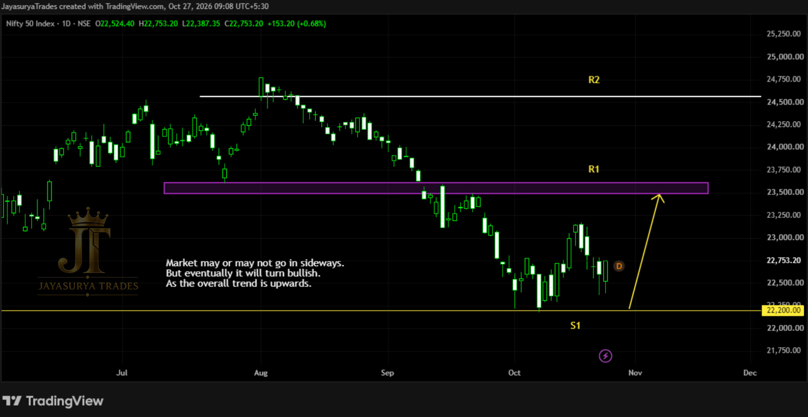

In our previous Tuesday Market Focus, I discussed the possibility of NIFTY 50 moving upward from the 22,200 support level (S1). Price has now moved upward from that level, following the scenario highlighted in the previous analysis. The market is showing signs of a potential shift from the earlier downtrend toward an uptrend.

In the previous analysis, I also identified the absence of FII participation as a source of fundamental weakness behind the earlier decline. The current upward movement has brought the market's direction back into focus. From the price structure described in this analysis, 22,200 is now a crucial support reference because it is the level from which the market has turned upward.
Major Support S1: 22,200 — the key level from which price has moved upward.
Current Structure: The market is showing a potential transition from downtrend to uptrend.
Next Level in Focus: The chart-marked resistance R1.
Bullish Continuation Scenario: If price breaks above R1 and gives a retracement, R2 could become the next resistance level to monitor.
Current Bias: Bullish. Focus on potential buy-side opportunities while the bullish structure remains in place; avoid looking for short-side entries based on the current analysis.
Current Market Structure — From 22,200 Support Toward R1
The previous analysis identified 22,200 as S1 and discussed the possibility of an upward move from that level. The market has now moved upward from S1, in line with that scenario. This reaction makes 22,200 a crucial level to monitor in the current market structure.
The current movement suggests that NIFTY 50 may be shifting from the previous downtrend toward an uptrend. This is the basis for the present bullish bias. The market is now on its way toward the chart-marked R1 resistance, which is the next important area to observe.
The trend assessment should continue to be guided by price behaviour. Although the current structure favours looking for bullish opportunities, the analysis does not mean that further upside is guaranteed. The market's reaction around the next resistance will provide more information.
Key Levels to Monitor
The main reference is 22,200, marked as S1. The next chart-marked level in focus is R1. If price breaks above R1 and then gives a retracement, R2 could become the next resistance reference. No numerical prices for R1 or R2 were provided in today's notes, so this article does not assign prices to them.
Potential Scenarios & Confirmation Conditions
Scenario 1 — Continued Move Toward R1
NIFTY 50 is currently moving upward from the 22,200 support level and is on its way toward the chart-marked R1 resistance. Given the shift in the market structure described above, the immediate scenario being watched is a continued move toward R1.
The bullish bias reflects the current market direction, not a guaranteed outcome. Price behaviour as it approaches R1 will be important for deciding how the next stage of the analysis should be assessed.
Scenario 2 — R1 Breakout and Potential Move Toward R2
If price breaks above R1 and gives a retracement, R2 could become the next resistance level in focus. The breakout and retracement condition should be observed before treating this as a potential continuation scenario.
The reaction at R1 will help determine whether the market can continue toward R2 or whether a different structure develops. The next weekly analysis will review the market's behaviour around R1 and assess whether the level has been broken or price has reversed.
Current Approach — Maintain a Bullish Bias
Based on the current upward movement and the potential transition from downtrend to uptrend, the preferred focus in this analysis is on potential bullish opportunities. Short-side or bearish entries are not the focus while the current bullish structure remains in place.
This is a directional bias based on the market behaviour described in today's analysis, not a direct buy recommendation or a guarantee of further upside. Any assessment should remain conditional on how price behaves around the key levels.
Why 22,200 Matters
The 22,200 level is important because it is the support from which the market has turned upward in the scenario discussed in the previous analysis. It is now the key support reference for monitoring whether the developing bullish structure remains relevant.
For now, the market is moving toward R1. A break above R1 followed by a retracement could bring R2 into focus. The reaction at R1 will be reviewed in the next Tuesday Market Focus to assess whether the market is continuing upward or showing signs of reversal.
Key Takeaways
- The previously discussed upward scenario from 22,200 support (S1) has played out.
- The 22,200 level is a crucial support reference because price has turned upward from it.
- NIFTY 50 is showing a potential shift from the previous downtrend toward an uptrend.
- The next chart-marked resistance in focus is R1.
- If price breaks above R1 and gives a retracement, R2 could become the next resistance level to monitor.
- The current analysis favours a bullish bias and does not focus on short-side entries.
- The reaction at R1 will be reviewed in the next Tuesday Market Focus; further upside remains conditional.
The plan for NIFTY 50 remains focused: monitor 22,200 as the crucial support reference, observe the move toward R1, and assess the next scenario based on the market's reaction around resistance.
Major support: 22,200 (S1).
Next resistance: Chart-marked R1.
Potential bullish continuation: A break above R1 followed by a retracement could bring R2 into focus.
Current bias: Bullish while the current structure remains in place.
Next review: Assess the market's reaction at R1 in the next Tuesday Market Focus.
One day. One market. One focused analysis.
Levels. Structure. Scenarios. Confirmation.
No hype. Just how the market behaves.
Watch. Wait. Confirm.
Legal Disclaimer
All chart comments, structural patterns, volumes, and price action layouts discussed on this platform represent the personal opinions and historical chart observations of the creator at Jayasurya Trades. The content provided here is strictly for general informational and investor educational purposes only. It does not constitute, and must never be interpreted as, investment advice, stock recommendations, or direct buy/sell tips. The creator is NOT a SEBI-registered Research Analyst or Investment Advisor. Trading in securities and derivatives involves substantial market risk. Viewers are strongly urged to conduct their own independent technical research and consult a certified, SEBI-registered professional before deploying capital. Jayasurya Trades assumes no liability or financial responsibility for any personal trading outcomes, losses, or execution decisions made by the audience.